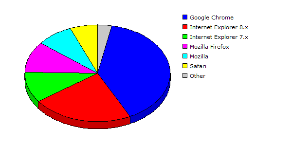

| Rank |
Browser |
Hits |
Visitors |
| 1 |
Google Chrome |
36010 |
32.12% |
3007 |
39.43% |
| 2 |
Internet Explorer 8.x |
40959 |
36.53% |
1716 |
22.50% |
| 3 |
Internet Explorer 7.x |
15152 |
13.51% |
784 |
10.28% |
| 4 |
Mozilla Firefox |
9812 |
08.75% |
781 |
10.24% |
| 5 |
Mozilla |
1729 |
01.54% |
628 |
08.23% |
| 6 |
Safari |
4611 |
04.11% |
466 |
06.11% |
| 7 |
Netscape 5.x |
3839 |
03.42% |
235 |
03.08% |
| 8 |
Internet Explorer 6.x |
4 |
00.00% |
4 |
00.05% |
| 9 |
Netscape 4.x |
6 |
00.01% |
3 |
00.04% |
| 10 |
Internet Explorer 5.x |
1 |
00.00% |
1 |
00.01% |
| 11 |
cURL |
1 |
00.00% |
1 |
00.01% |
| |
Total |
112124 |
7626 |
|
Description: This report contains statistics about the browsers that your visitors use.
|
|